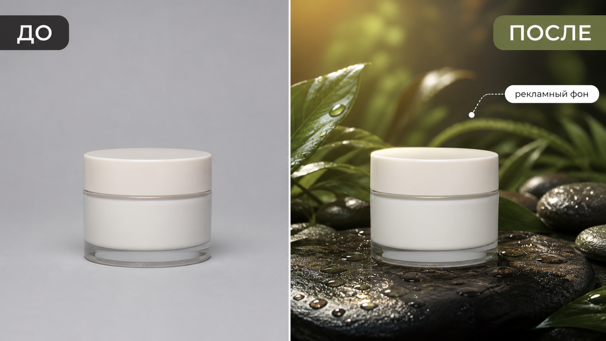

Промтзилла
Рекламный фон должен усиливать товар, а не менять его. Поэтому в промте отдельно фиксируем форму, упаковку и читаемость продукта.

Пошаговая инструкция
- 1Выбери фото товара, где продукт хорошо виден и не перекрыт руками или другими объектами.
- 2Загрузи фото в инструмент редактирования фото онлайн.
- 3Опиши рекламную сцену: кухня, ванная, природа, спорт, премиальный интерьер или сезонная композиция.
- 4Попроси сохранить товар без изменений и согласовать свет с новой сценой.
- 5Проверь, что упаковка, форма, цвет и читаемые элементы не поменялись.
Пример результата
На обложке показан сценарий до/после: исходное фото и результат, который можно получить через инструмент редактирования фото онлайн.
Промт
RU
Создай рекламный фон для товара на фото. Сцена: [опиши нужный фон и настроение]. Важно: — сохрани сам товар без изменения формы, цвета, размера, упаковки и пропорций; — не меняй логотип, маркировку и читаемые элементы, если они есть; — замени только окружение и фон; — согласуй свет, тени, отражения, масштаб и перспективу с новым фоном; — добавь уместные детали сцены, которые поддерживают назначение товара; — не закрывай продукт листьями, брызгами, декором или текстом; — результат должен выглядеть как реальная рекламная фотография. Если фон конфликтует с товаром по свету или масштабу, предложи более естественный вариант.
EN
Create an advertising background for the product in the photo. Scene: [describe the desired background and mood]. Important: — preserve the product itself without changing shape, color, size, packaging, or proportions; — do not change the logo, markings, or readable elements if present; — replace only the environment and background; — match lighting, shadows, reflections, scale, and perspective to the new background; — add relevant scene details that support the product use case; — do not cover the product with leaves, splashes, decor, or text; — the result should look like a real advertising photograph. If the background conflicts with the product lighting or scale, suggest a more natural version.
Важно
Рекламный фон не должен вводить в заблуждение: не добавляй свойства, комплектацию или размер, которых у товара нет.
Теги